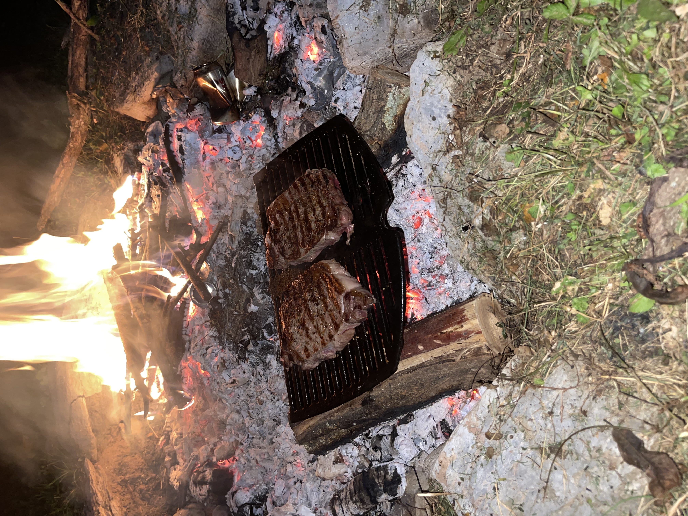

Ribeye on the Fire


There's nothing like a steak cooked over hot coals on a cool, end-of-summer night. It's easy to prepare, cook, and enjoy. Note the beers are optional, however many critics have observed consuming one or two before cooking the steak greatly improves the flavor.
Ingredients
- Optional: Beers, chilled.
- 1 lb Ribeye Steak per Person, preferably 1.5-2 inches thick
- 2 tsp salt
- 1/2 tsp cracked black pepper
- 1/2 tbsp oil. Use one with a high smoke point - avocado, grapeseed, etc.
- Grill grate - these can be found on Amazon for under 40 bucks.
Preparation
- One hour before cooking, remove ribeye steak from the fridge and coat with 1/2 tsp salt on both sides.
- While you let the steak sit, get the fire roaring. You want a lot of white coals to cook over.
- After an hour passes, place the grill grate over a bed of white coals for 5 minutes to heat up.
- Rub the steak with oil and another 1/2 tsp salt on each side.
- Place steak on the grill grate, searing for 2-3 minutes each side.
- Immediately after removing the steak from the fire, season with 1/4 tsp black pepper on both sides.
- Cover the steak with tinfoil for 5 minutes, then slice and enjoy!
If you want to check the doneness of the steak after resting, slice directly in the middle of the steak, not the ends! There's also a handy trick you can do with no tools here.